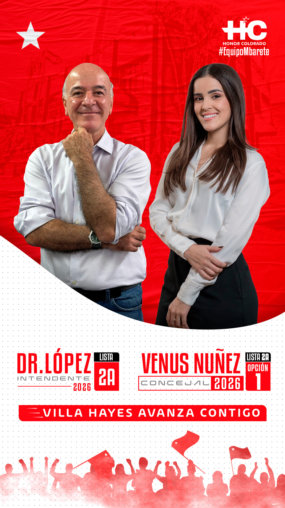
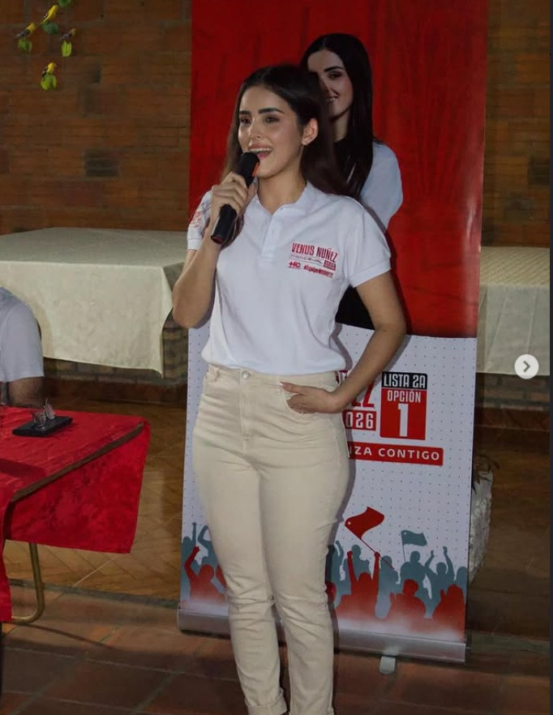
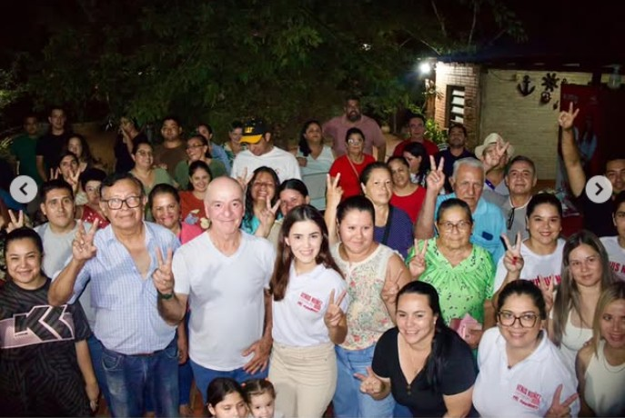
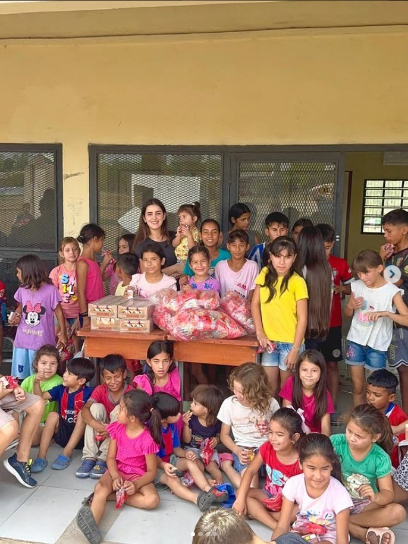
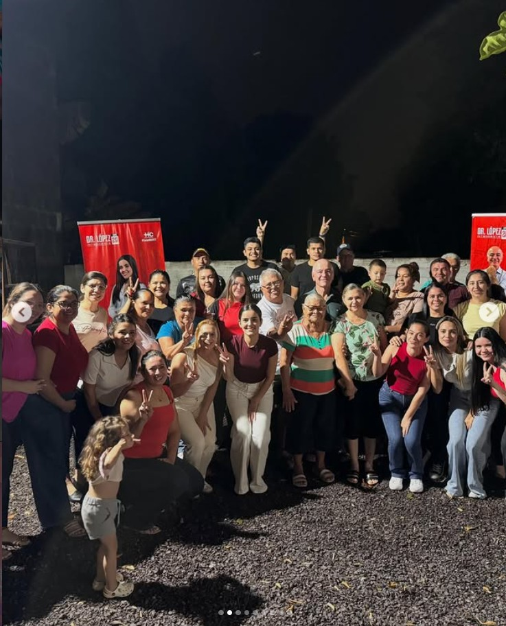
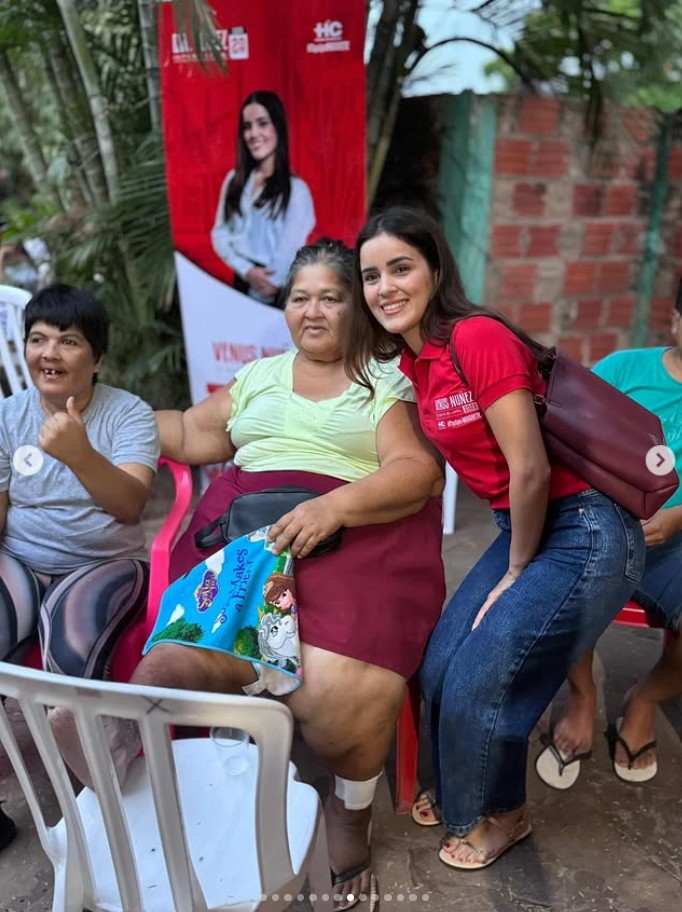

Venus Núñez - Concejal
En equipo con el Dr. López - Intendente

Soy Venus Núñez y creo firmemente que nuestra ciudad necesita líderes comprometidos con el trabajo de cerca, en los barrios y con la gente. Mi vocación de servicio nace de escuchar las necesidades reales de nuestros vecinos.
Quiero ser concejal para ser tu voz, para gestionar con transparencia y para asegurar que el desarrollo llegue a cada rincón de nuestra comunidad.
Ideas claras para una gestión transparente y eficiente.
Control estricto de los recursos para que tus impuestos se conviertan en obras reales.
Calles transitables, iluminación y servicios básicos eficientes en todas las zonas.
Creación de comisiones vecinales activas y coordinación efectiva con la policía.
Impulso a programas de primer empleo y espacios de formación técnica.
Recuperación y mantenimiento de plazas y parques para las familias.
Facilidades e incentivos para los pequeños comerciantes de la ciudad.

El verdadero cambio se logra trabajando en equipo.
Junto al Dr. López (Candidato a Intendente, Lista 2A), construiremos una gestión municipal coordinada, eficaz y cercana.
Un intendente que ejecuta y una concejal que gestiona y controla: la fórmula para transformar nuestra ciudad.
El trabajo de cerca en los barrios.





"Venus es una persona que siempre nos escuchó. Cuando le pedimos ayuda para nuestra cuadra, estuvo presente."
"Necesitamos jóvenes preparados en la Junta, ella y el Dr. López son el equipo que nuestra ciudad merece."
Dejanos tus datos para sumarte a nuestro equipo de voluntarios, recibir información o coordinar reuniones en tu barrio.